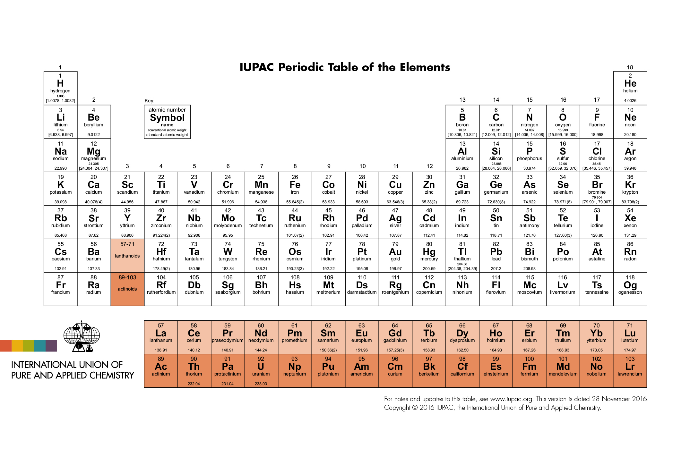

Seminář z obecné chemie
Kontakt:
Zdeněk Moravec, hugo@chemi.muni.cz
Konzultace
Konzultace (prezenční nebo distanční) jsou možné po předchozí domluvě (osobně nebo emailem).
Požadavky na zápočet
Přesné požadavky budou sděleny na první hodině.
- Docházka, povolena jedna neomluvená absence.
- Alespoň 50 % bodů ze čtyř průběžných testů.
Výukové materiály
Prezentace
-
Názvosloví
-
Základní chemické zákony
-
Periodická soustava prvků
-
Chemické rovnice - vyčíslování, stechiometrické výpočty
-
Atomové jádro a elektronový obal
-
Koncentrace, titrace
-
VSEPR
-
Chemická vazba
-
Ideální plyn
-
Termodynamika
-
Roztoky, pH
-
Elektrochemie
-
Koordinační sloučeniny
-
NMR - určování počtu a intenzity signálů
-
Izomerie
Řešené příklady
- NMR
- Koncentrace
- Titrace
- pH
- Součin rozpustnosti
- Termochemie
- Elektrochemie
- Komplexní sloučeniny
Osnova (podzim 2024, kurz C1040)
- Úvodní test, periodická soustava prvků, oxidační číslo, názvosloví prvků.
- Názvosloví: binární sloučeniny, kyseliny, soli, anionty, kationty.
- Názvosloví: funkční deriváty kyselin, podvojné soli, polyanionty.
Základní chemické výpočty: látkové množství, Avogadrova konstanta, atomová a molekulová hmotnost, elementární analýza.
- Výpočty z chemických rovnic - vyčíslování neredoxních a redoxních rovnic, stechiometrické výpočty.
- Atomové jádro a jaderné rovnice. Elektronový obal atomu, elektronová konfigurace, Lewisovy vzorce. Periodické trendy.
- VSEPR, hybridizace, symetrie, izomerie. NMR spektra.
- Molekulové orbitaly - dvouatomové molekuly, obsazování hladin elektrony, řád vazby. Roztoky, rozpouštění pevných látek.
- Koncentrace, molarita, ředění roztoků.
- Komplexní sloučeniny: názvosloví, teorie ligandového pole
- Plynové zákony: stavová rovnice ideálního plynu. Krystalické mřížky.
- Chemická rovnováha: rovnovážná konstanta, změna Gibbsovy energie. Iontová síla, pH.
- Elektrochemie: Galvanický článek, Nernstova rovnice
